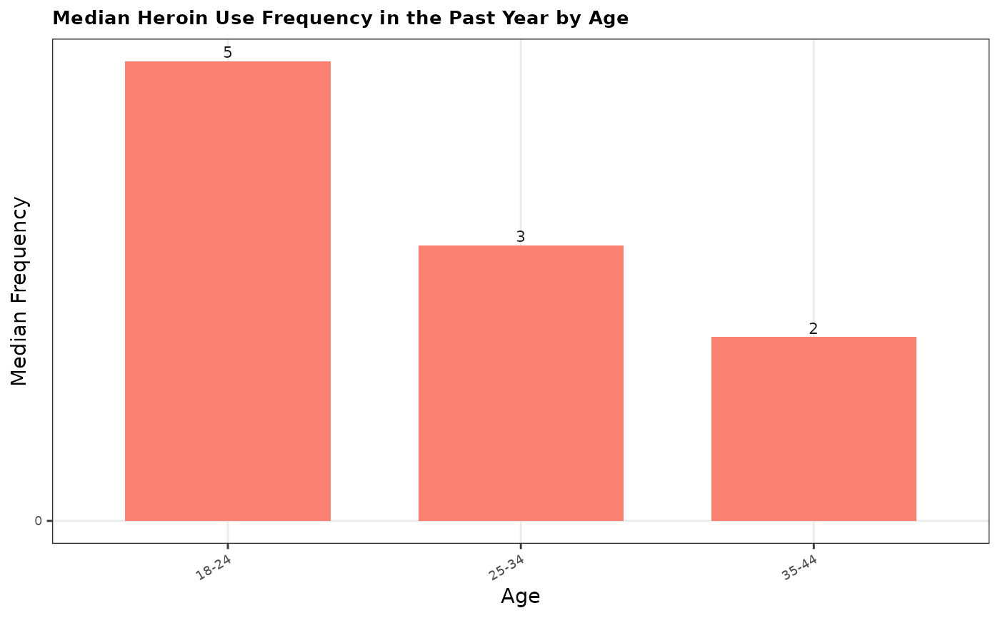

Create and save frequency bar plots
Arguments
- data
A .csv dataframe containing data to be plotted.
- x_var
A string specifying the x-axis variable.
- y_var
A string specifying the y-axis variable.
- title
A string specifying the plot title.
- x_label
A string specifying the x-axis label.
- y_label
A string specifying the y-axis label.
- fill_color
A string specifying the fill color for the bars.
- output_file
A string specifying the output file path for saving the plot.
Examples
sample_data <- data.frame(
age = c("18-24", "25-34", "35-44"),
alcohol.use = c(80, 75, 60),
alcohol.frequency = c(20, 15, 10),
marijuana.use = c(50, 30, 20),
heroin.frequency = c(5, 3, 2),
class = c("youth", "adult", "adult"),
n = c(100, 200, 150)
)
create_bar_freq_plot(
sample_data,
"age",
"heroin.frequency",
"Median Heroin Use Frequency in the Past Year by Age",
"Age",
"Median Frequency",
"salmon",
"output/eda-test/test3.png"
)
